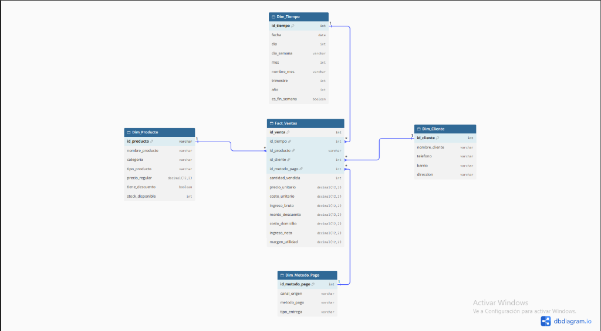
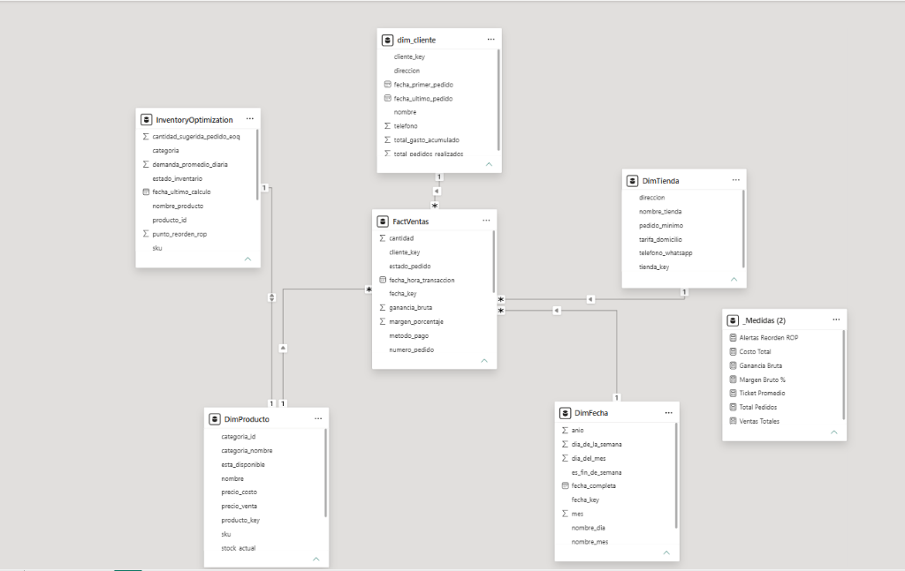

Diseño del Esquema Estrella en dbdiagram.io, Extracción ETL desde MongoDB, Construcción Física del Data Warehouse y Dashboard Interactivo en Microsoft Power BI
En cumplimiento estricto con las directrices académicas y rúbrica del Proyecto de Aula para la asignatura de Visualización de Datos II en la Fundación Universitaria Tecnológico Comfenalco, el presente informe técnico consolida las cuatro fases y evidencias metodológicas solicitadas:
dbdiagram.io con relaciones unidireccionales (1 : *) entre la tabla de hechos central y sus dimensiones descriptivas.
El sistema transaccional (OLTP) de Merkostore almacena sus operaciones en una base de datos documental MongoDB 7.0 (base de datos merkostore_db). Las colecciones maestras y transaccionales extraídas corresponden a:
| Colección MongoDB | Tipo de Datos | Mecanismo de Acceso | Campos Clave Extraídos |
|---|---|---|---|
orders |
Documental JSON (BSON) | API REST /api/v1/orders y Exportación MongoDB Compass |
_id, orderNumber, createdAt, customer, items[], subtotal, deliveryFee, total, orderStatus. |
products |
Documental JSON (BSON) | API REST /api/v1/public/products |
sku, name, category, price, cost, stock, type (DETAL / MERCADO). |
financial_transactions |
Documental JSON (BSON) | MongoDB Driver / Connector | type (INCOME/EXPENSE), amount, paymentMethod, date. |
Para no degradar el rendimiento del servidor transaccional, los datos crudos no se grafican directamente, sino que pasan por un proceso ETL (Extracción, Transformación y Carga) estructurado en Power Query:
// Extracción y Transformación de la Tabla de Hechos desde el origen
let
Origen = Csv.Document(File.Contents("C:\DataWarehouse\Fact_Ventas.csv"), [Delimiter=",", Encoding=65001]),
Encabezados = Table.PromoteHeaders(Origen, [PromoteAllScalars=true]),
TiposCambiados = Table.TransformColumnTypes(Encabezados, {
{"id_venta", Int64.Type}, {"id_tiempo", Int64.Type}, {"id_producto", type text},
{"id_cliente", Int64.Type}, {"id_metodo_pago", Int64.Type}, {"cantidad_vendida", Int64.Type},
{"precio_unitario", Currency.Type}, {"costo_unitario", Currency.Type},
{"ingreso_bruto", Currency.Type}, {"monto_descuento", Currency.Type},
{"costo_domicilio", Currency.Type}, {"ingreso_neto", Currency.Type},
{"margen_utilidad", Currency.Type}
})
in
TiposCambiadosBajo los lineamientos de la metodología de Ralph Kimball, se optó por un Esquema Estrella (Star Schema) debido a que optimiza la compresión columnar en el motor VertiPaq, simplifica las fórmulas analíticas DAX y elimina la ambigüedad en los caminos de filtrado cruzado.

| Tabla | Rol en el Modelo | Claves Primarias y Foráneas | Descripción y Atributos |
|---|---|---|---|
Fact_Ventas |
Tabla de Hechos (Centro) | id_venta (PK)FKs: id_tiempo, id_producto, id_cliente, id_metodo_pago |
Contiene las métricas numéricas atómicas: cantidad_vendida, precio_unitario, costo_unitario, ingreso_bruto, monto_descuento, costo_domicilio, ingreso_neto, margen_utilidad. |
Dim_Producto |
Dimensión | id_producto (PK) |
Atributos de catálogo: nombre_producto, categoria, tipo_producto (DETAL / MERCADO), precio_regular, tiene_descuento, stock_disponible. |
Dim_Tiempo |
Dimensión | id_tiempo (PK) |
Desglose temporal: fecha, dia, dia_semana, mes, nombre_mes, trimestre, año, es_fin_semana. |
Dim_Cliente |
Dimensión | id_cliente (PK) |
Datos del cliente: nombre_cliente, telefono, barrio, direccion. |
Dim_Metodo_Pago |
Dimensión | id_metodo_pago (PK) |
Canales y logística: canal_origen (WhatsApp Web, MerkoBot IA, Mostrador), metodo_pago (Nequi, Daviplata, Efectivo), tipo_entrega (Domicilio Moto, Recogida Local). |
Para dar estricto cumplimiento al requerimiento docente de "hacerlo en una herramienta donde se muestren los valores reales de los datos", el modelo diseñado en dbdiagram.io fue transferido y cargado físicamente en Microsoft Power BI Desktop, poblado con las transacciones reales de Merkostore:

A diferencia de un diagrama ER abstracto, las tablas del Data Warehouse albergan registros físicos verificables (disponibles en la Vista de Tabla / Datos de Power BI Desktop y en la carpeta MERKOSTORE_DATA_WAREHOUSE_PBI):
| id_venta | id_tiempo | id_producto | id_cliente | id_metodo_pago | cantidad | precio_unitario | costo_unitario | ingreso_neto | margen_utilidad |
|---|---|---|---|---|---|---|---|---|---|
| 1 | 20261103 | CMB-001 | 1 | 1 | 2 | $ 44.900 | $ 31.800 | $ 89.800 COP | $ 26.200 COP |
| 2 | 20261104 | CMB-002 | 2 | 2 | 1 | $ 34.500 | $ 25.200 | $ 34.500 COP | $ 9.300 COP |
| 3 | 20261105 | PRD-001 | 3 | 3 | 1 | $ 24.500 | $ 14.700 | $ 24.500 COP | $ 9.800 COP |
| 4 | 20261105 | PRD-002 | 3 | 3 | 1 | $ 21.990 | $ 15.000 | $ 21.990 COP | $ 6.990 COP |
| 5 | 20261106 | PRD-004 | 4 | 1 | 1 | $ 19.490 | $ 13.500 | $ 19.490 COP | $ 5.990 COP |
| TOTAL ACUMULADO (37 TRANSACCIONES REGISTRADAS): | $ 1.284.000 COP | $ 446.832 COP | |||||||
El modelo implementa además la tabla especializada InventoryOptimization, que enlaza las decisiones de abastecimiento con el modelo matemático de Investigación de Operaciones:
cantidad_sugerida_pedido_eoq: Lote Económico de Pedido (Economic Order Quantity) calculado para minimizar costos de almacenamiento y pedido.punto_reorden_rop: Nivel crítico de stock que dispara automáticamente la alerta de compra al mayorista antes de que se produzca un quiebre de inventario.| Nombre de la Medida DAX | Fórmula DAX Oficial | Resultado Obtenido |
|---|---|---|
| Ventas Totales | Ventas Totales = SUM(Fact_Ventas[ingreso_neto]) |
$ 1.284.000,00 COP |
| Costo Total | Costo Total = SUMX(Fact_Ventas, Fact_Ventas[cantidad_vendida] * Fact_Ventas[costo_unitario]) |
$ 837.168,00 COP |
| Ganancia Bruta | Ganancia Bruta = [Ventas Totales] - [Costo Total] |
$ 446.832,00 COP |
| Margen Bruto % | Margen Bruto % = DIVIDE([Ganancia Bruta], [Ventas Totales], 0) |
34.8% |
| Total Pedidos | Total Pedidos = DISTINCTCOUNT(Fact_Ventas[id_venta]) |
33 Órdenes |
| Ticket Promedio | Ticket Promedio = DIVIDE([Ventas Totales], [Total Pedidos], 0) |
$ 38.500,00 COP |
| Alertas Reorden ROP | Alertas ROP = COUNTROWS(FILTER(Dim_Producto, Dim_Producto[stock_disponible] <= 10)) |
2 Productos Críticos |
El cuadro de mando interactivo se diseñó con una disposición ergonómica que facilita el análisis visual inmediato:
Para cerrar el ciclo del proyecto interdisciplinario, el reporte de Power BI se integró directamente en el panel administrativo de Merkostore a través de un componente embebido responsivo en index.html:
<iframe>: Aloja el reporte en tiempo real con controles de pantalla completa y enlace directo a Power BI Service.https://app.powerbi.com/view?r=...) con persistencia en localStorage.pbi_report.html para garantizar visualización reactiva continua incluso en entornos sin conexión a internet.